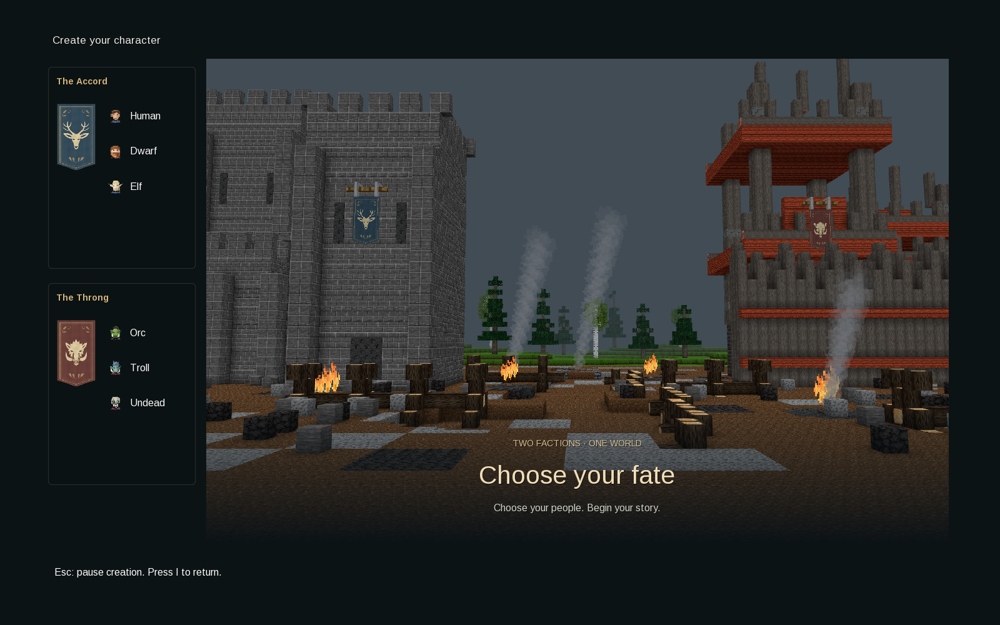
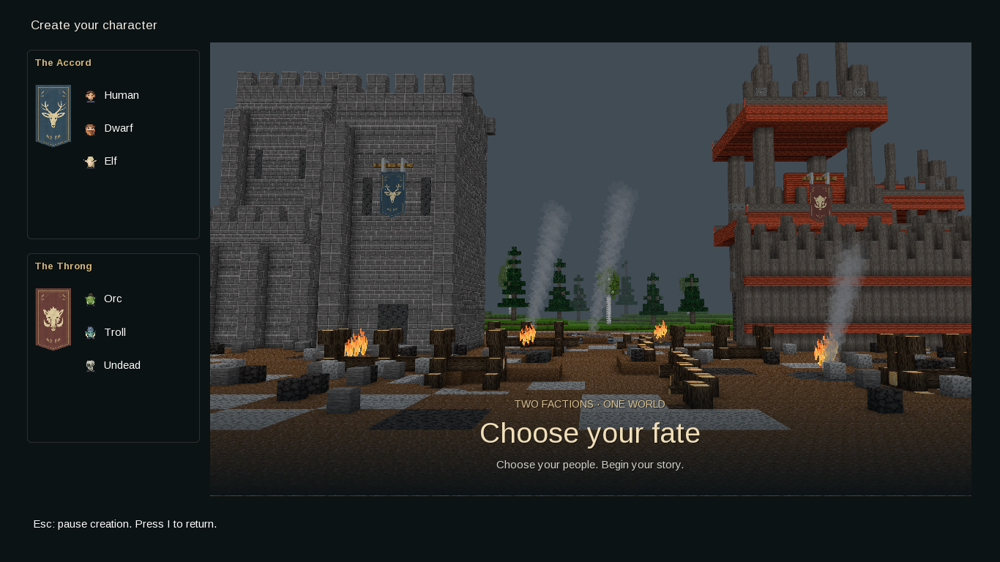
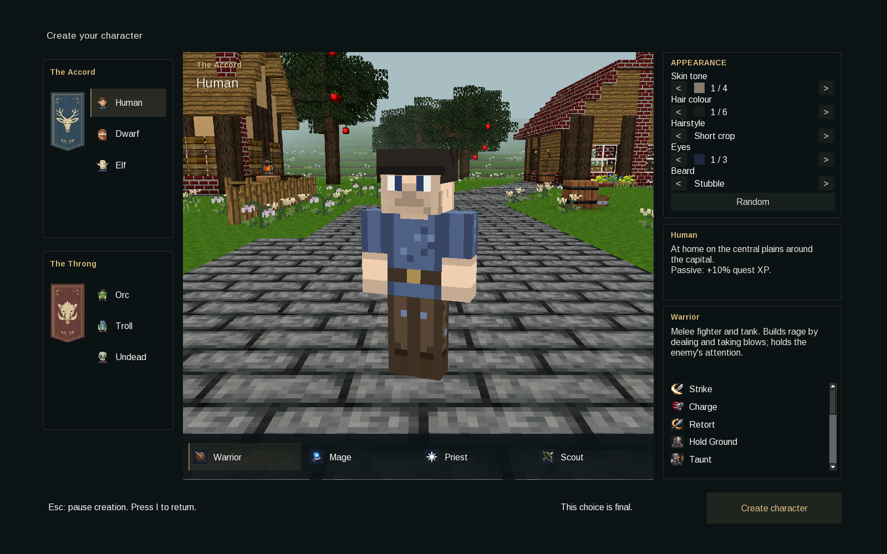
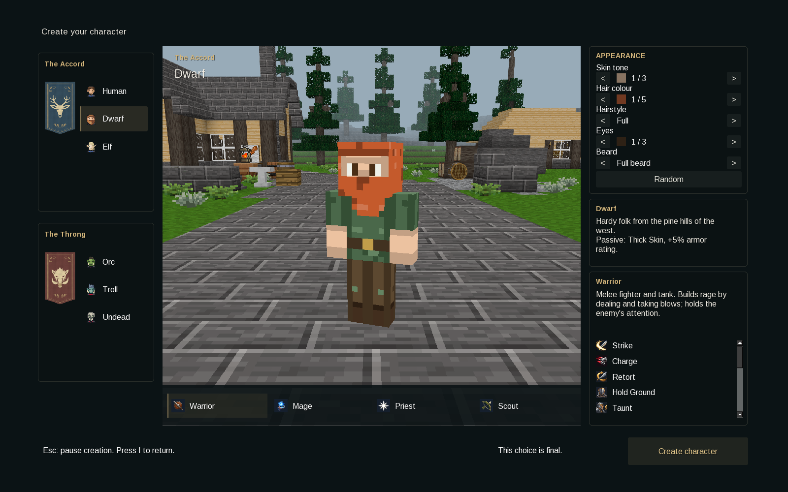
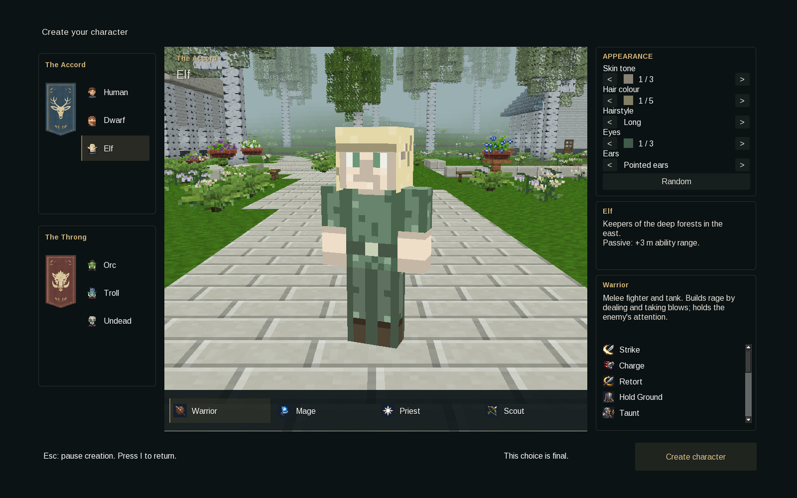
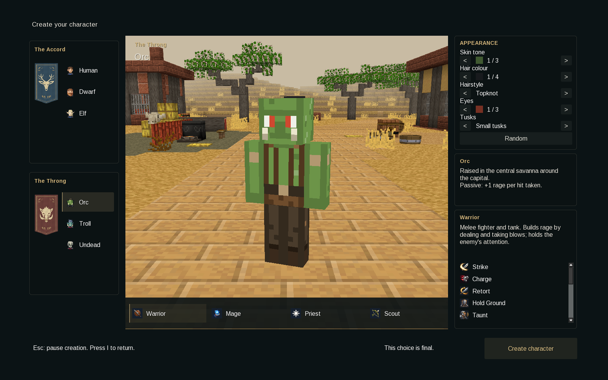
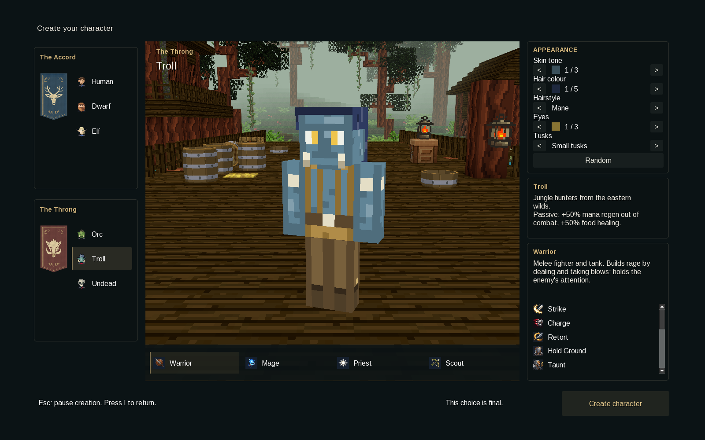
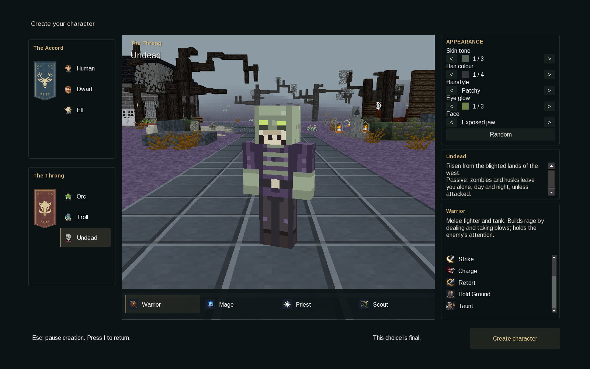
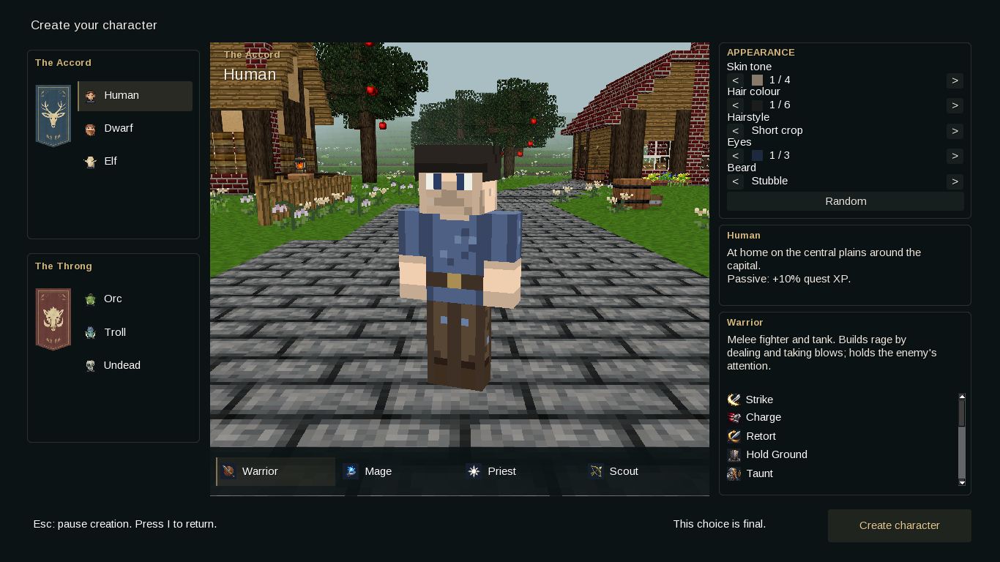
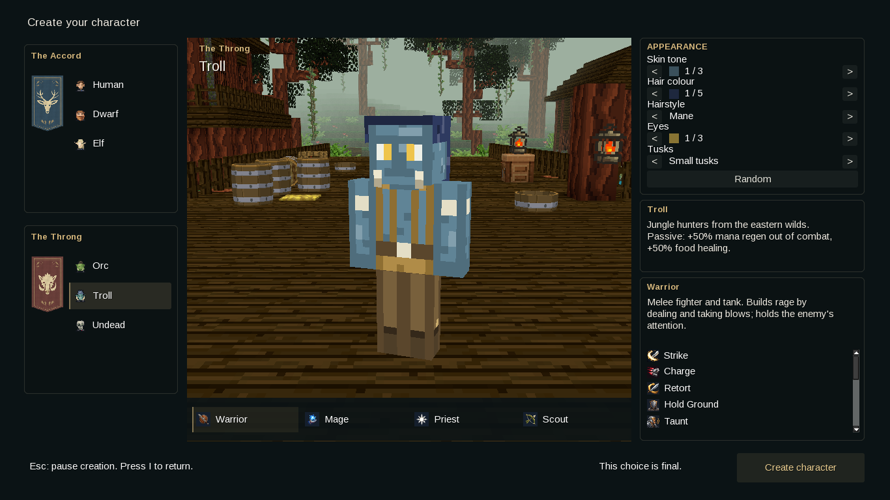

Character Creation im echten Luanti-Client
Native Umsetzung des freigegebenen Entwurfs. Aufnahmen mit Luanti 5.18 bei 1600 × 1000 und 1366 × 768. Die Figuren stammen aus dem nativen Modell-Widget; die Kulissen wurden passend zu dessen Kamera separat gerendert.
Choose your fate · Auftakt
Freigegebenes Festungsbild mit Bäumen in der Ferne, unverändert in die native Oberfläche übernommen. Vor der ersten Volkswahl sind Klassen und Gestaltung ausgeblendet; danach erscheint die Charakteransicht mit Warrior als Vorauswahl.
Startansicht · 1600 × 1000
Startansicht · 1366 × 768
Human · 1600 × 1000
Dwarf · 1600 × 1000
Elf · 1600 × 1000
Orc · 1600 × 1000
Troll · 1600 × 1000
Undead · 1600 × 1000
Kleineres Fenster
Human · 1366 × 768
Troll · 1366 × 768